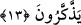

(ez-Zuhruf, 43/13) ve benzeri âyetlerde ifâde edildiği gibi onlar üzerinde diledikleri
gibi tasarrufta bulunma imkânını elde etmeleri demek değildir. Bilakis kulların menfaat
ve maslahatına göre onların idâresi Allah’a âiddir. Sanki bu da onların hizmetine
verme, kendileri tarafından isteklerine göre tasarruf gibidir.
“Yıldızlar da Allah’ın emri ile hareket ederler.” Yâni diğer yıldızlar da
hareketlerinde, üçlü, dörtlü ve benzeri şekillerdeki vaziyetlerinde Allah’ın emrine
boyun eğmişlerdir. Onları da Allah yaratmış ve istediği şekilde idâre etmektedir. Yahut
yıldızlar da onun irâde ve isteğine göre yaratıldığı halde insanlara sağladıkları faydalar,
daha evvelki gece ve gündüz, ay ve güneşin faydaları gibi açıkça görülmediği için onlar
hakkında insanların emrine verildiği ifâdesi kullanılmayıp sâdece Allah’ın hükmü
altında olduğu belirtilmekle yetinilmiştir. “en-Nücûme” şeklinde mansûb okunmuştur.
Buna göre mânâ: ‘Yıldızları da emrine âmâde kıldı’ veyâ ‘onlar Allah’ın emrine âmâde
olduğu halde onlardan sizi faydalandırdı.’ Ya da ‘O’nun yaratması ve takdîri ile niçin
yaratılmışlarsa sizi ondan faydalandırdı.’
“Şüphesiz ki bunlarda” toplu ve ayrıntılı olarak zikredilenlerle alakalı emre âmâde
kılma konusunda “aklını kullananlar” akıllarını düşünme ve istidlâl için açan ve ibret
alanlar “için pek çok” açık “deliller vardır.” Allah’ın bu yüce eserleri çok çeşitli ve
onlardaki kudret, ilim ve hikmetinin büyüklüğü Allah’ın vahdâniyeti konusunda açık ve
zâhir olunca; tefekkür ve düşünme ifâde eden bir fiil kullanılmayıp sâdece akılla
irtibatlandırılmıştır.
İlim ehli demiştir ki: Akıl Allah’ın dimağda yarattığı, nûrunu da kalbe koyduğu ışık
saçan bir cevherdir. Vâsıtalarla gâibleri, müşâhede ile mahsûsâtı anlar. Kalbe göre akıl,
cesede göre ruh gibidir. Aklı olmayan kalb, ölü hükmündedir ve hayvanların kalbi
mertebesindedir.
Rasûlullah (s.a.)’e: “İnsanların akıl bakımından en güzeli kimdir?” diye soruldu.
“Allah’ın rızâsı için çalışıp, haramlarından kaçınan kimsedir.” [133] buyurdu. Halk
arasında: ‘Serçe kadar aklı yok.’ derler. Ensar’dan Hassân b. Sâbit (r.a.) da şöyle
demiştir:
Kavmin uzun boylu ve iri yarı olmasının önemi yoktur.
Zira onların cismi katır gibi, akılları serçe gibidir.
13. Yeryüzünde sizin için rengârenk yarattıklarında da öğüt alan bir toplum için
gerçek bir ibret vardır.